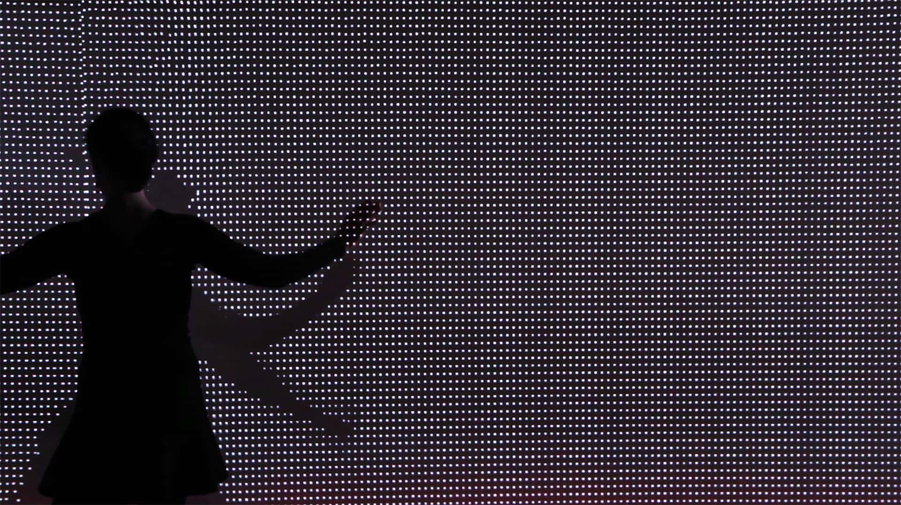

An interactive installation that lets you play with your own shadow

This interactive projection engages the viewers by surprising them with a second shadow, which is
projected on the wall with a slight delay. This allows the audience to participate in an unusual and
playful dialogue with their own shadow.